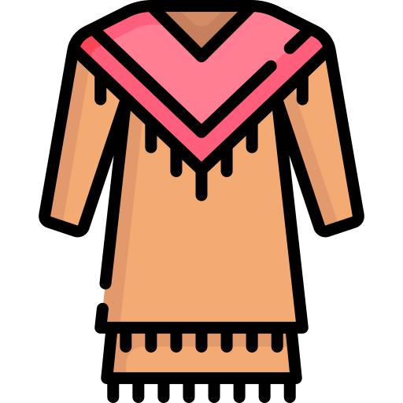

Traditional Clothing
Terms used for traditional wear
| Term | Translation | Audio |
|---|---|---|
| traditional clothing | kayāsohci isitwanihk ayiwinisa | |
| bolo tie | kātahkoptamihk tāpiskākan | |
| bustle | kisōtōtākewin | |
| cloth | ayiwinis | |
| leggings | mitāsihkanak | |
| moccasin | pahkekinweskisin | |
| prayer blanket | ayamihāw akohp | |
| shawl | akwanahowenis | |
| table cloth | mı̄cisowināhtik wēyustasowin |